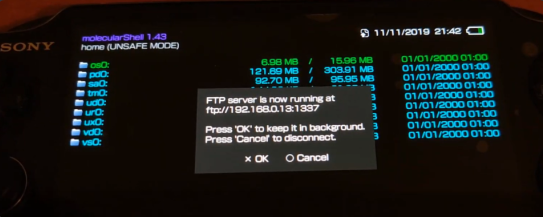

PlayStation Vita - Homebrew France Docs
Rejoignez Le Homebrew France pour obtenir de l'assistance ou nous aider à développer le guide.
Ce guide permettera de jailbreaker votre PlayStation Vita en basculant vers la version 3.60 du firmware. Suivez les étapes de ce guide afin de mettre à jour votre PlayStation Vita vers le firmware 3.60.
I. Mise à niveau de la console en 3.60
1. Ouvrez les paramètres de votre console.
2. Rendez-vous dans "Réseau ➜ Paramètres Wi-Fi".
3. Connectez-vous à votre point d'accès Wi-Fi.
4. Rendez-vous dans "Paramètres avancés puis "Paramètres DNS".
5. Réglez en "Manuelle" et non "Automatique". Deux paramètres apparaissent : "DNS primaire" et "DNS secondaire".
6. Renseignez l'adresse IP 212.47.229.76 dans le champ "DNS primaire". Laissez le champ vide pour "DNS secondaire".
7. Vérifiez également que le paramètre "Serveur Proxy" soit configuré sur "Ne pas utiliser". N'oubliez pas d'enregistrer vos configurations puis retournez à la page principale des paramètres.
8. Rendez-vous dans "Mise à jour système ➜ Mise à jour via Wi-Fi". Votre console fonctionne désormais sous le firmware 3.60.
II. Lancement de l'exploit
Prérequis
- Une connexion Wi-FI/WLAN.
- La dernière version de Enso

- La dernière version de VitaShell
- La dernière verison de FileZilla Client
Note: FileZilla est le Client FTP que nous recommandons mais cela fonctionnera avec n'importe quel autre Client FTP.
1. Ouvrez le navigateur Internet de la console. Puis tapez l'adresse suivante : henkaku.xyz. Une fois la page chargée, appuyez sur le bouton orange "Install".
2. Au moment où le menu apparaît, maintenez le bouton enfoncé pendant que les manipulations s'effectuent à l'écran. Cela permet l'installation de Molecular Shell en même temps que HENkaku.
3. Une fois que les manipulations sont terminées et que vous êtes redirigé sur le LiveArea (le menu principal), vérifiez que tout s'est bien passé dans les Paramètres, vous devriez voir apparaître "Paramètres de HENkaku".
4. Dans ce menu, cochez les options suivantes : "Activer le spoof du PSN", "Autoriser l'installation de Homebrew non-sécurisés", "Activer le spoof de version". En-dessous de "Version spoofée", écrivez le dernier firmware en date. Le firmware actuel est "3.74".
5. Retournez sur le LiveArea et lancez "Molecular Shell".
Nous allons maintenant installer Enso et VitaShell sur la console. Pour procéder nous aurons besoin de FileZilla.
6. Installez FileZilla avec le programme d'installation précédemment téléchargé.
7. Connectez votre console et votre ordinateur au même réseau.
8. Sur votre console, ouvrez "Molecular Shell". Appuyez sur la touche SELECT, un message apparaît vous indiquant l'adresse IP de votre console. Ne touchez plus à rien.
9. Vous allez devoir à présent rentrer les différentes informations de connexion dans le logiciel FileZilla.
10. Entrez dans "Hôte", l'adresse IP de votre console, elle est généralement de cette forme : 192.168.X.XX.
11. Entrez dans "Port", le chiffre 1227. Une fois cela fait, cliquez sur "Connexion rapide". Si par la suite FileZilla affiche un message, cliquez simplement sur "OK".
12. Une fois la connexion établie, sur la partie droite de la fenêtre, vous aurez le contenu de votre PSVita avec toutes les partitions qu'elle possède. Ouvrez ux0: et glissez-déposez les fichiers VPK de Enso et VitaShell téléchargés précédemment.
13. Une fois le transfert terminé, revenez sur votre console. Fermez la connexion en appuyant sur 
14. Nous allons à présent installer les deux fichiers VPK que nous venons d'envoyer sur la console. en théorie, si ce guide a bien été suivi, vous devrez aller dans ux0: pour les retrouver.
15. Pour chacun des fichiers VPK, appuyez sur  pour les installer. Vous pouvez à présent lancer "Enso", appuyez sur
pour les installer. Vous pouvez à présent lancer "Enso", appuyez sur  pour accepter les termes puis
pour accepter les termes puis  pour installer Enso. La console devrait alors démarrer en affichant le logo "Molecule", ce qui montre que l'opération est réussie et que votre console est sous Enso.
pour installer Enso. La console devrait alors démarrer en affichant le logo "Molecule", ce qui montre que l'opération est réussie et que votre console est sous Enso.
Maintenant que votre console est hackée, "Molecular Shell" vous sera inutile. Pour un aspect plus rapide et pratique, utilisez à présent VitaShell, de préférence via USB.